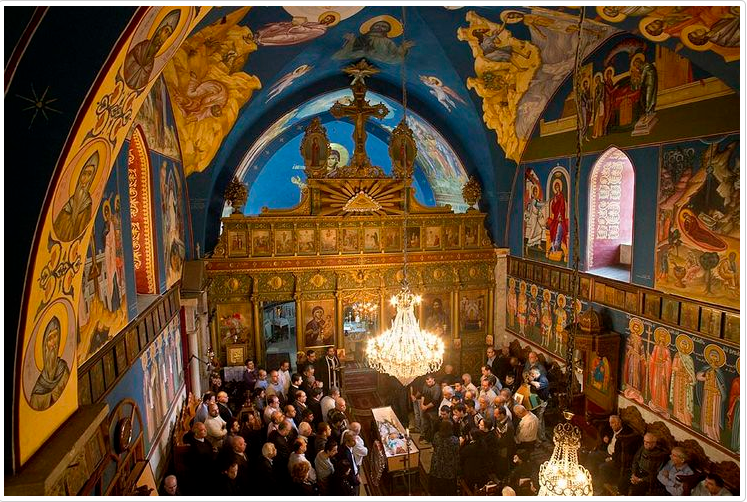
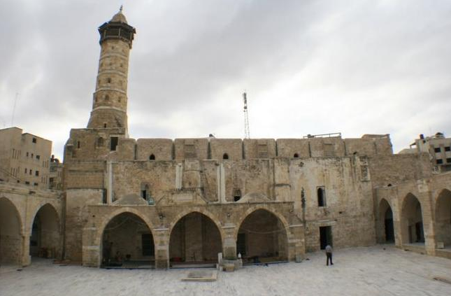
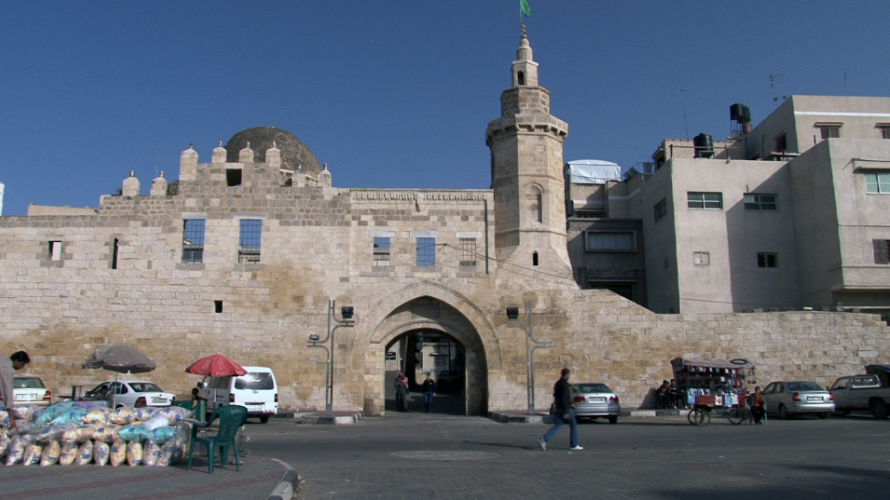
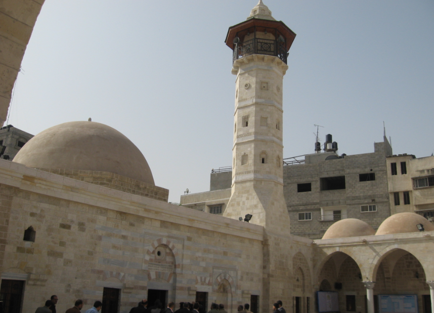
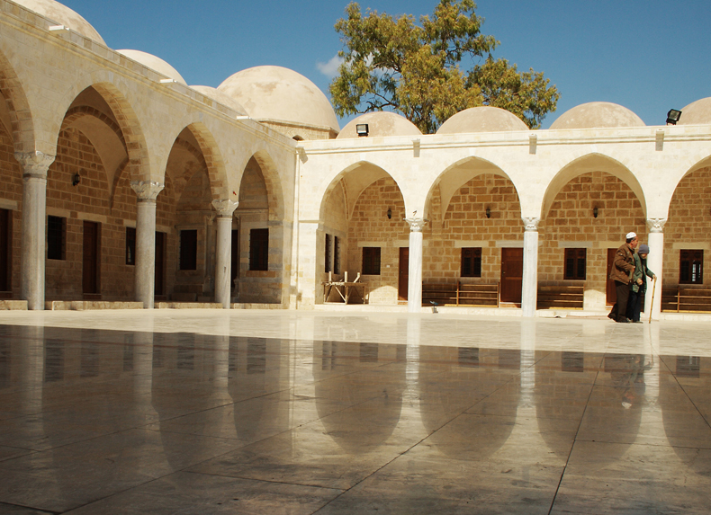
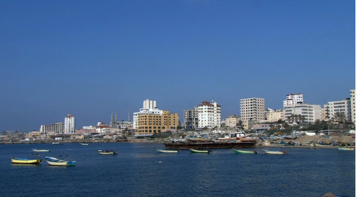
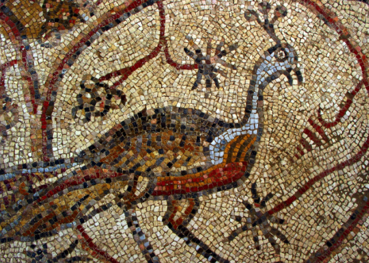
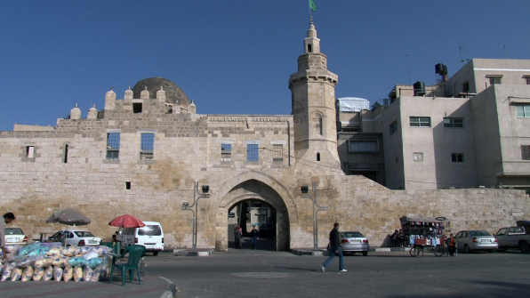

SAINT PORPHYRIUS CHURCH
|
NAPOLEON’S FORT |
THE GREAT MOSQUE |
|
|  |  |
 |
This fourth-century church is where Saint Porphyrius died and was buried in 420 AD. It is located in Gaza’s old city and is still used by the Greek Orthodox community. |
Located on Al-Wahda Street in downtown Gaza, this imposing stone building dates back to the Mamluk period. It is known as Qasr al-Basha (The Pasha’s Palace) because Napoleon (referred to as the “Pasha”) spent a few nights here on his way through the town in 1799. |
Located in downtown Gaza at the end of Omar Mukhtar Street, the Great Mosque or Al-Umari Mosque features a beautiful minaret. It was originally a Norman church built by the Crusaders in the twelfth century. It is said to occupy the site of the first ancient temple of Marnas. |
|
AL-ZAYTUN QUARTER |
AL-DARAJ QUARTER |
SAYYED HASHEM MOSQUE |
|  |  |  |
Gaza’s oldest quarter, Al-Zaytun contains many beautiful old homes with impressive carved wooden doorways. A Catholic church and a Protestant church are also located in this quarter. |
This quarter in the old city features the Abdulhamid public fountain that was built in the sixteenth century and renovated by the Ottoman Sultan Abdulhamid in 1893. |
Located in Al-Daraj Quarter, the mosque is one of the biggest and most beautiful in Gaza. The tomb of Prophet Muhammad’s grandfather Hashem Bin Abdulmanaf, who died in Gaza during a trading voyage, is believed to be under the dome of the mosque. |
|
ANTHEDON PORT |
TELL UM AMER |
KHAN YUNIS |
|  |  |  |
nthedon is the first known seaport of Gaza and is mentioned in Islamic literature along with Tida. The city was inhabited from 800 BC to 1100 AD. One kilometer south of Anthedon is the ancient harbor of Maiumas, which was once identified as the harbor of Gaza. It has been continuously populated and during the Roman period became a flourishing, well-developed coastal town. Maiumas, which is mentioned only in late classical sources, dates back to an earlier period when Gaza’s trade with Greece began. Maiumas comes from an Egyptian word that means “maritime place.” |
The first settlement on this site, Tell Um Amer, was established during the Roman era in Wadi Gaza close to the seashore. It appears on the Madaba map under the name Tabatha and was inhabited from the Byzantine to the early Islamic period (400 to 670 AD). Tell Um Amer was the birthplace of Saint Hilarion, who had received an excellent education in Alexandria, and had gone to Antonius in the desert for further instruction. He founded a monastery in the third century and is considered to be the founder of monastic life in Palestine. The monastery was destroyed in 614 AD. |
Located 25 kilometers south of Gaza City, Khan Yunis is a market town for the agricultural produce from local villages. It features a fortress built in the thirteenth century as a garrison for soldiers guarding pilgrims on their journey from Jerusalem to Mecca. The weekly market in the town center is a fascinating picture of traditional life. |
WADI GAZA
Known for the distinctive feature of twists and turns, Wadi Gaza has eight major curves in its path across the Gaza Strip. Its width varies, with its widest point near its mouth where it reaches about 100 meters. Six smaller rivers feed into the main valley, the most important of which are Wadi Abu Qatroun to the north and Wadi Ghalbeh to the south. The location of the Gaza Strip, at the corner of the land bridge that connects the continents of Africa and Eurasia, makes it a bottleneck for migratory birds. Thousands of ducks, herons, storks, cranes, flamingos, waders, raptors, quails, passerines, and other birds have been reported to pass through Wadi Gaza. The most common endemic bird is the Palestinian sunbird (Nectarinia osea), which is found throughout the year in the Gaza Strip. Studies show that there is an urgent need to protect Wadi Gaza as a wildlife habitat. The threats to the area are quite severe. Wadi Gaza faces many environmental problems, one of the most pressing of which is that it is used to collect sewage from refugee camps and as a solid-waste dumping site.